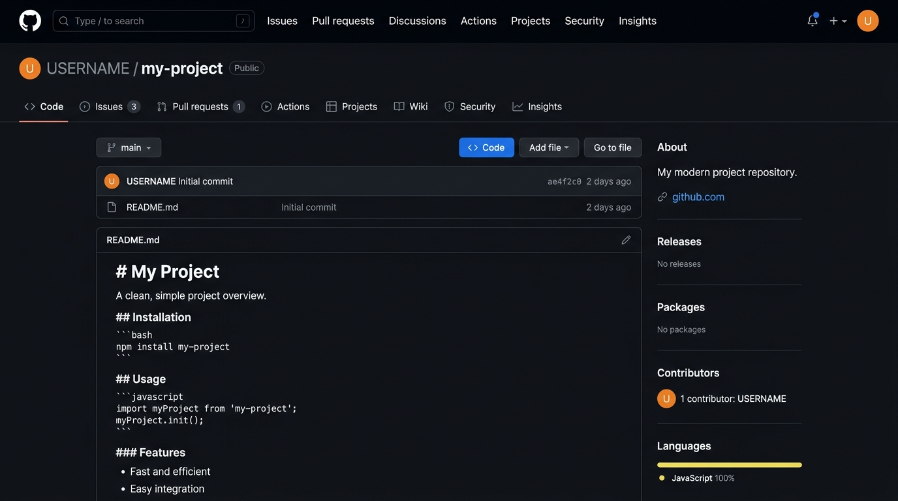
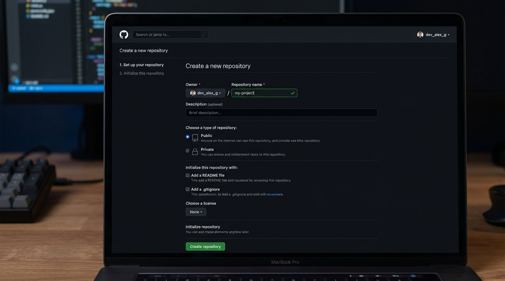

GitHub
Cloud Repositories & Collaboration
“Host, share, and collaborate on code anywhere in the world”

What Is GitHub & Why Do We Need It?
Distinguishing between your local machine tool and the world's largest code platform
01 Git (Local Machine)
Git runs on your personal computer. It tracks file revisions, commits, and branches completely offline without requiring internet access.
02 GitHub (Cloud Platform)
GitHub is a cloud service that hosts Git repositories online. It enables team collaboration, code reviews, issue tracking, continuous integration, and portfolio showcase.
Create a GitHub Account
Your online profile and repository host
Getting Started on GitHub
To push your local Git repository to the cloud, you need a free GitHub account.
- 1 Visit https://github.com
- 2 Click Sign up
- 3 Enter your email, create a secure password, and pick a username
- 4 Verify your email address
git config user.email so your commits connect to your GitHub avatar.The World's Leading Developer Platform
Over 100 million developers store, collaborate on, and publish open-source and private software on GitHub.
Create a New GitHub Repository
Setting up the empty cloud destination for your project
5 Steps on GitHub.com
- 1 Log into GitHub and click the + icon in the top right
- 2 Select New repository
- 3 Enter Repository name: my-project
- 4 Choose Public (viewable by anyone) or Private
- 5 Click Create repository

Do NOT check "Add a README file", ".gitignore", or "license" if your local folder already has files!
Add GitHub Remote
Teaching your local repository the URL of your GitHub repository
Anatomy of the Command
git remote: Manage remote connectionsadd: Register a new remoteorigin: Standard default nickname for the primary remoteURL: The web address of your GitHub repository
git remote -v (verbose) lists all connected remotes and verifies the link.HTTPS vs SSH
Understanding the two common connection protocols
HTTPS (Recommended for Beginners)
https://github.com/USERNAME/my-project.git
- Works immediately out of the box
- No complex key generation required
- Authenticates via GitHub Personal Access Token (PAT) or Git Credential Manager browser login
SSH (Advanced / Experienced Devs)
git@github.com:USERNAME/my-project.git
- Passwordless authentication via cryptographic keypairs
- Preferred by developers for automated terminal workflow
- Requires generating SSH keys and adding them to GitHub settings first
Rename Branch to main
Standardizing your primary branch name to match modern GitHub
-M stands for "Move/Rename with Force". It renames your current branch to main regardless of what it was named before.Why main?
Historically, Git defaulted to calling the first branch master. In 2020, GitHub and the open-source community transitioned to main as the official, modern industry standard default branch name.
Running git branch -M main ensures your local repository and GitHub's default branch name align seamlessly.
Push to GitHub
The pivotal command: uploading your local commits to the cloud
Command Breakdown
git: Git CLI applicationpush: Upload local commits to remote-u: Set upstream (remembers remote branch for future simplegit push)origin: Target remote server nicknamemain: Local branch to upload
Verify on GitHub
Seeing your code live on the web
Verification Steps
- Open your browser and navigate to your repository URL
- Refresh the webpage
-
README.mdis visible and rendered cleanly - Commit history shows 1 commit: "Initial commit"
- Default branch shows main
The Everyday Git Workflow
The four commands developers execute dozens of times every single day
Why Memorize This Loop?
Whether you are building a small personal website or working at a tech giant with 10,000 engineers, this 4-step sequence is the heart of everyday version control.
-u earlier, you only need to type git push without specifying remote and branch names every time!Example: Modify a Project
A real-world walkthrough of editing code and pushing updates
Clone a Repository
Downloading an existing repository and its full history from GitHub
What Does git clone Do?
clone = download a Git repository and its complete commit history to your computer.
- Creates a new folder matching the repository name
- Downloads all project files and branches
- Automatically sets up
originremote linking back to GitHub - You do NOT need to run
git init!
Pull Changes
Syncing your local workspace with updates made by teammates or other machines
Push vs Pull Direction
git pull before starting work on a team project to avoid conflicting commits!Mistake: Wrong Remote URL
Fixing typos in repository URLs without deleting the repository
Why Not git remote add?
If you try running git remote add origin ... again when origin already exists, Git will error: fatal: remote origin already exists.
Use git remote set-url origin <new-url> to safely update the existing origin URL.
Mistake: Push Rejected
Understanding non-fast-forward rejections and why never to force push
git push --forceForce push overwrites and deletes the remote history on GitHub, potentially destroying work done by teammates!
Common Causes
- A teammate pushed new commits to GitHub
- The GitHub repo was created with an extra README/license
- Running
git pullmerges remote changes into local first so you can push cleanly
From Zero to GitHub
The complete master script from an empty terminal to your first pushed project
What Each Stage Accomplished
- Folder created and entered
- Git initialized locally
- Files staged and committed into local history
- Branch renamed to
main - Remote origin configured to GitHub
- Commits uploaded live to the web
Final Challenge
Practice the everyday cycle completely independently
8-Step Challenge
- 1 Create a new file (e.g.
app.jsorindex.html) - 2 Modify
README.mdto add a project description - 3 Run
git statusto see modified & untracked files - 4 Stage the changes with
git add . - 5 Commit with
git commit -m "Add new changes" - 6 Push to GitHub with
git push - 7 Refresh your GitHub repository in your web browser
- 8 Verify your new commit and updated files appear!
Questions?
“Happy coding”
You just mastered version control basics!
You now know how to install Git, initialize a local project, stage, commit, create a GitHub repo, connect remotes, and push your code with confidence.
Next Steps to Explore
- Practice feature branches and merging
- Open your first Pull Request on GitHub
- Explore open-source projects and contribute